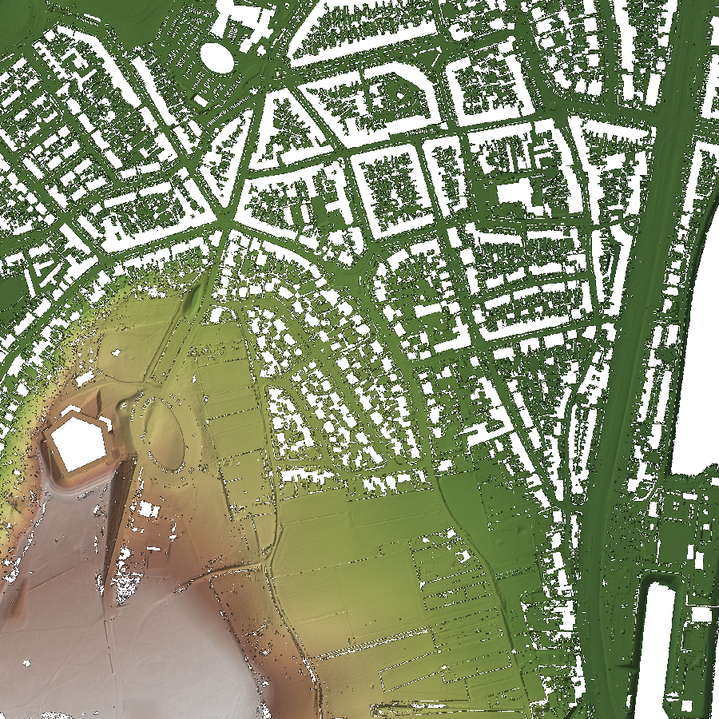

3D BAG ·
qmesh
demo - Sint Pietersberg, Maastricht
loading terrain…
Locator
- OpenStreetMap
Heightmap
- input DEM used for this tile (44–98m NAP)

Mesh
- raw generated terrain, no imagery
Cesium
- same tiles, shaded + PDOK luchtfoto